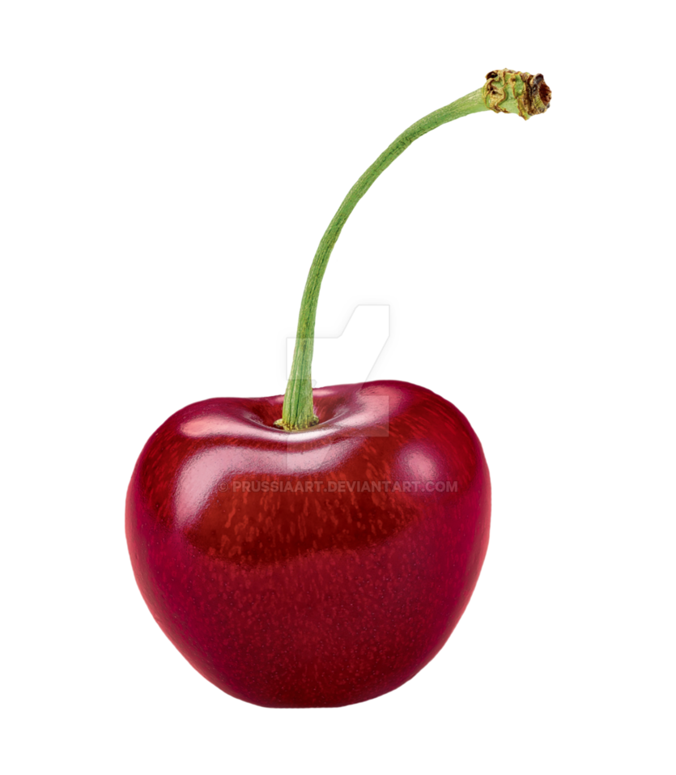

Result.
If your fruit is cherry, life isn’t always as sweet for you. You often face ups and downs, particularly professionally; and find that you make small sums of money, instead of a lump sum. You have a fertile imagination and are often involved in creative pursuits. You are a very sincere and loyal partner; but find that expressing your feelings is not very easy. Your home is your haven, and you love nothing more than being surrounded by close family and your beloved partner.